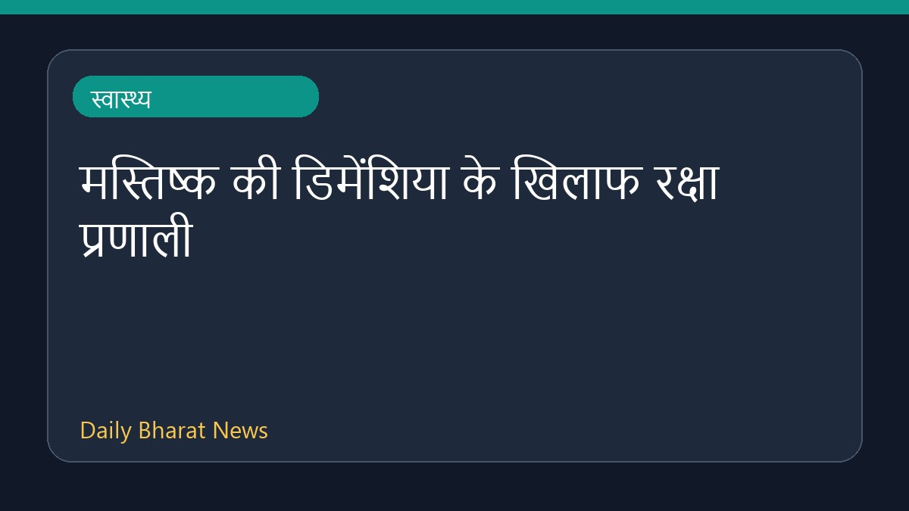

मस्तिष्क की डिमेंशिया के खिलाफ रक्षा प्रणाली

स्वास्थ्य समाचार स्रोतों के अनुसार, डिमेंशिया के खिलाफ मस्तिष्क की रक्षा प्रणाली को समझने और उसकी गुत्थी सुलझाने को लेकर जानकारी सामने आई है। इस विषय पर हाल ही में ईurekAlert! पर रिपोर्ट प्रकाशित की गई है। हालांकि, इस विषय पर उपलब्ध जानकारी अभी बहुत सीमित है और इसके विस्तृत तथ्यों का इंतज़ार है। वैज्ञानिकों और शोधकर्ताओं द्वारा इस दिशा में निरंतर अध्ययन किए जा रहे हैं ताकि मस्तिष्क की कार्यप्रणाली और डिमेंशिया से बचाव के तरीकों को स्पष्ट रूप से समझा जा सके।
मूल स्रोत: Health News Sources
Demystifying the brain’s defense against dementia - EurekAlert! ↗
Demystifying the brain’s defense against dementia - EurekAlert! ↗